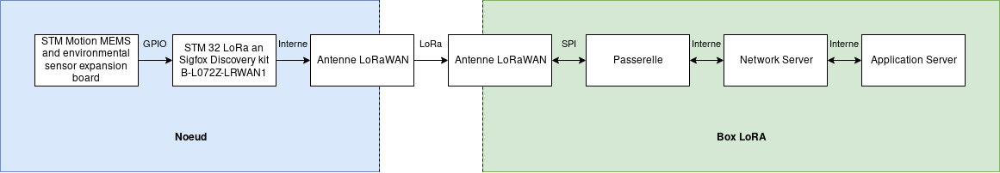

Spécifications¶
Le protocole LoRa n’est pas fait pour envoyer de grandes quantités d’information très rapidement. On ne peut envoyer que quelques KiloOctets par intervalle de quelques minutes.
Dans sa version 1.0 le LoRaWAN spécifie déjà plusieurs directives à suivre pour le sécuriser. Il y a une clef *AES 128bits* à fournir pour sécuriser la commuication depuis le noeud jusqu’au serveur d’application. - AppKey Clef AES principale. Elle doit être connue du noeud et du network manager. Elle sert ensuite à déterminer les 2 clefs suivantes. - NwkSKey Network Session key : chiffre la communication entre le noeud et le network server. Elle sert à détecter une éventuelle perte d’information dans le message. - AppSKey Application Session key : chiffre le message entre le noeud et le network server, sans cette clef il est impossible de lire le message.
Les clefs NwkSKey et AppSKey sont actualisées à chaque nouvelle connexion d’un appareil, elles sont uniques à chaque noeud du réseau.
Le LoRaWAN utilise des frame counter à fin d’éviter les attaques par répétition. Deux compteurs sont initialisés lorsqu’un nouvel appareil est connecté. Le noeud incrémente le compteur FCntUP à chaque fois que qu’il envoit une information sur le UpLink. Le Network serveur, lui, incrémente le compteur FCntDown à chaque fois qu’il écrit sur le DownLink. Pour chaque trame du réseau la valeur des compteurs est envoyée avec. Le récepteur de la trame va comparer la valeur des compteurs à l’intérieur de la trame avec ses propres compteurs et si la valeur des compteurs de la trame est inferieure au compteur du récepteur, ce dernier va ignorer le message.
Le noeud¶
Le noeud sera composé d’un microcontrôleur, d’un capteur (ou plusieurs) et d’un module permettant la communication en LoRa. Pour le noeud nous allons utiliser un kit de développement provenant de STMicroelectronics.
Nous regroupons ci-dessous les attaques possibles. Ce sera notre base de travail pour sécuriser la communication.
Surface d’attaque : - Gestion des Clés AES - Modification du code source - Interception des données directement sur le capteur - SPA - DPA - Analyse EM - Memory dumping - Valeur des Frame Counters
Les secrets à protéger sont : - La valeur du capteur - Les clefs NwkSKey et AppSkey et la clef AES AppKey
La passerelle¶
La passerelle sert de traducteur entre le protocole LoRa et un autre protocole de communication. Elle sera hébergée sur un micro-ordinateur.
Network Server¶
Le Network server est le cerveau du réseau LoRaWAN, il génère les clefs et authentifie les noeuds. Il déchiffre aussi une partie des trames du réseau.
Surface d’attaque : - Enregistrement clef AES - Création des clefs NwkSKey et AppSKey
Secrets à protéger - La valeur des clefs NwkSKey, AppSKey et AppKey
Application Server¶
Le Application server est le service qui va traiter l’information du capteur, il va déchiffrer la dernière partie du message.
Surface d’attaque : - Réception de la clef AppSKey - Gestion de la clef AppSKey
Secret à protéger : - La valeur de la clef AppSKey
Points d’action (format poupées russes) :¶
Mise en place d’un réseau LoRaWAN sécurisé
Mise en place d’un réseau LoRaWAN avec sécurité basique (mot de passe) - Création d’un premier réseau (facile) entre le microcontrôleur Fipy et le capteur Pysense pour la partie noeud et une Raspberry pour la partie box LoRa. Ce premier réseau nous permet de prendre en main le fonctionnement global du LoRa, sans ajouter les complexités d’une carte STM, en travaillant avec un environnement de noeud plus simple.
Rédaction d’un tutoriel pour le déploiement de ce réseau. Chapitre 9 pour une prise en main simple.
Création d’un deuxième réseau identique identique au précédent, mais en remplaçant le noeud par une carte STM32 équipé d’un shield Motion MEMS and environmental (Nucleo expansion board). La finalité de notre réseau est, en effet, d’utiliser une carte STM32 pour le noeud.
- Construction des services de la Box LoRa
- Création d’un OS vs. Utilsation d’un OS existant (LoRaServer io)
Notre choix se portera sur l’utilisation d’un OS déjà existant. Sa rapidité de mise en oeuvre et son adaptabilité nous font pencher en sa faveur. Beaucoup de temps de développement est ainsi gagné en prenant l’OS LoRaserver.io
Choix de prendre un OS Full, qui contient gateway + network server + application server en interne, et permet une gestion simplifiée.
- Tests unitaires de fonctionnement :
- Vérificationla valeur du capteur est-elle correcte ?
Afficher la valeur de celle-ci dans le terminal et comparer avec la température ambiante réelle.
- Vérifier que la valeur est émise correctement.
Émission des trames LoRa. Travail à l’analyseur de spectres de fréquences.
- Vérifier que la valeur est arrivée
Réception des trames LoRa, via l’interface graphique.
- Vérifier que la valeur est bien transmise dans la box LoRA
Regarder sur la partie application server que la valeur est la même que celle affichée dans le terminal du microcontrôleur
- Mise en place d’un réseau avec des couches de sécurité renforcées
- Sécurisation du noeud
- Développer le software du noeud LoRaWAN
Sécurisation du noeud en cachant les clefs dans la mémoire (composant de sécurité : ATEC508A ou autre)
Sécurisation du noeud en cachant les clefs logiciellement
- Sécurisation de la Box LoRa
- Cas 1La box LoRa est le seul composant du serveur
Sécurisation vis à vis d’intrusion externe au systeme : VPN
Maintenance : Mise à jours, SSH
Verification des services
- Cas 2La box LoRa ne sert pas uniquement à au LoRa WAN
Sécurisation par rapport aux autres service présent et/ou utilisateurs : Vérifier les droits d’accès
Schéma technique des prototypes :¶
Ce premier schéma ci-dessous nous montre la chaine technique des composants du premier réseau simple pour la création du prototype.

Ce deuxième schéma ci-dessous nous montre la version finale du réseau tel qu’il sera construit.
{kind=link}
Analyse des risques¶
Pour le cas d’usage, nous avons défini que les aspects de non-répudiation et de confidentialité ne sont pas les plus critiques, car nous voulons transmettre uniquement la température et l’humidité. Nous traiterons donc les paramètres d’intégrité et d’authenticité. Il faut éviter qu’une personne vienne altérer l’information envoyée. Nous devons être sûrs que le noeud qui envoit l’information est bien le noeud que nous avons créé et pas celui d’un éventuel attaquant (par exemple : man in the middle).
Menaces envisageables |
Risques à considérer |
Contres mesures |
|---|---|---|
Dump mémoire STM32 et Raspberry |
✓ |
Hasher la clef / Composant de sécurité pour le firmware et clef |
Canaux cachés (DPA, SPA) |
x |
|
Autre Noeud usurpant l’identité de notre Noeud (altération des données) |
✓ |
Signature et certificat |
Mise à jour venant d’une entité autre que le serveur de mise à jour officiel |
✓ |
Signature des MAJ / certificat |
Interception des mises à jour |
✓ |
VPN |
Execution d’un OS malicieux sur la box LoRA |
✓ |
Secure boot |
Modification du programme du noeud |
✓ |
Condamnation des GPIO de debogage |
DoS attaque par envoi massif de données sur la Box LoRa |
✓ |
Limiter la réception d’un nombre de trames par X temps |
Contraintes :¶
Protocole de communication LoRaWAN entre la passerelle et les noeuds
Utilisation du matériel fourni par l’encadrant
Matériel :¶
Voici le matériel dont nous disposons :
Lorawan discovery kit : https://www.st.com/en/evaluation-tools/b-l072z-lrwan1.html
MEMS environmental shield : https://www.st.com/en/ecosystems/x-nucleo-iks01a1.html
LoRaWAN concentrator : https://shop.imst.de/wireless-modules/lora-products/8/ic880a-spi-lorawan-concentrator-868-mhz?number=404802
Carte Fipy : https://docs.pycom.io/datasheets/development/fipy/
Carte pysense : https://pycom.io/product/pysense/
Antenne : https://www.gotronic.fr/art-kit-antenne-pour-lora-et-sigfox-25376.htm
Raspberry pi 3b : https://www.raspberrypi.org/products/raspberry-pi-3-model-b/